Sets
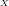
and are equinumerous, written
are equinumerous, written 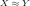
, if there is a bijection ; one writes
; one writes 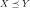
if there is an injection. A set is countable if it is equinumerous
with a subset of  , and uncountable otherwise.
, and uncountable otherwise.
For every set there is no surjection from onto its power set
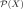
. In particular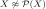
, while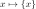
gives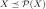
.Let
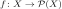
be any map and put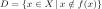
. If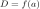
for some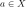
, then is by definition
is by definition 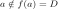
, a contradiction either way. So is not in the image and
is not in the image and  is not
surjective. The map is injective because
is not
surjective. The map is injective because
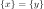
forces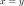
.The proof uses nothing about , so there is no largest set and no largest cardinality: the scale is unbounded. Applied to
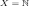
it says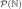
is uncountable, which is the same argument as the diagonal one for the real numbers, with the binary expansion removed.If and
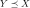
then .
Let  and
and  be injections. On the
power set , ordered by inclusion, every subset has a
supremum (its union), so it is a complete lattice. The map
be injections. On the
power set , ordered by inclusion, every subset has a
supremum (its union), so it is a complete lattice. The map
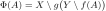
 enlarges
enlarges 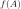
, shrinks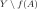
and its image under , and so enlarges the
complement. By the Knaster-Tarski theorem there is with
, and so enlarges the
complement. By the Knaster-Tarski theorem there is with
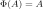
, that is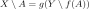
.Define
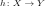
by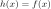
for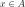
and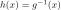
for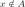
, the latter being defined and single-valued because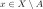
lies in the image of the injective. It is surjective: a point of is hit by the
first clause, and a point 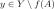
satisfies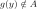
and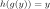
. It is injective: and
 are injective on their domains, and their images
and are disjoint.
are injective on their domains, and their images
and are disjoint.
A countable union of countable sets is countable.
Let
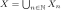
with each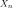
countable. Choose, for each , an injection
, an injection 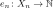
– this is a choice from the non-empty set of such injections, one for each. Define 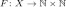
by sending to
to
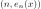
where is least with 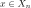
. It is injective: the first coordinate recovers, and  is
injective on . Since
is
injective on . Since
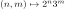
is injective by unique factorisation,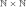
is countable, hence so is .
The choice of the injections is not decoration: without some form of the
axiom of choice the statement is not provable, because "each
is countable" gives, for each , a non-empty set of enumerations and
no way to name one. It is the cleanest place in this archive where a
familiar-looking statement turns out to rest on choice.